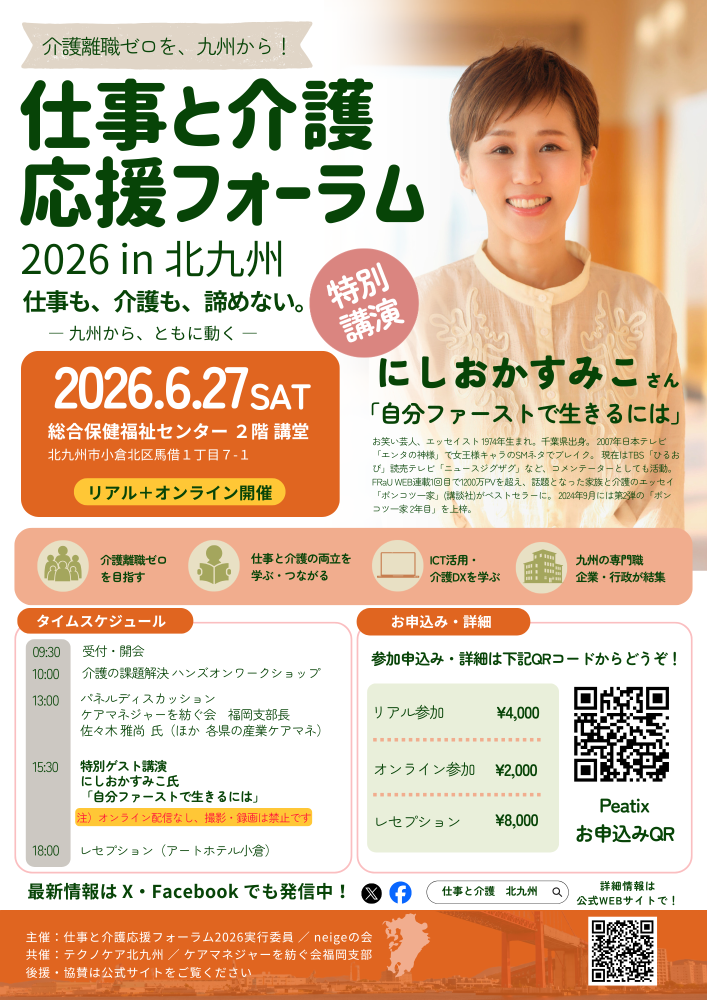
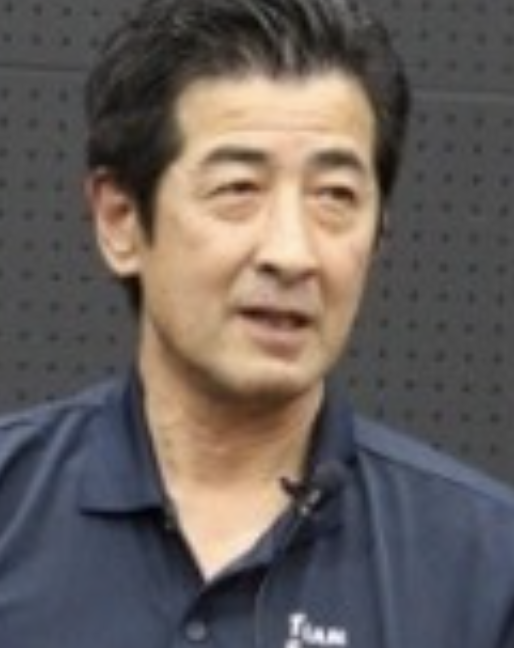
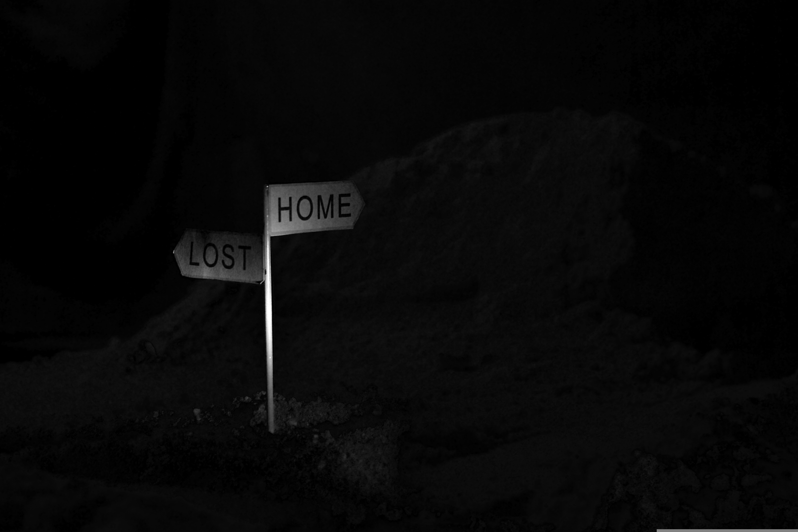
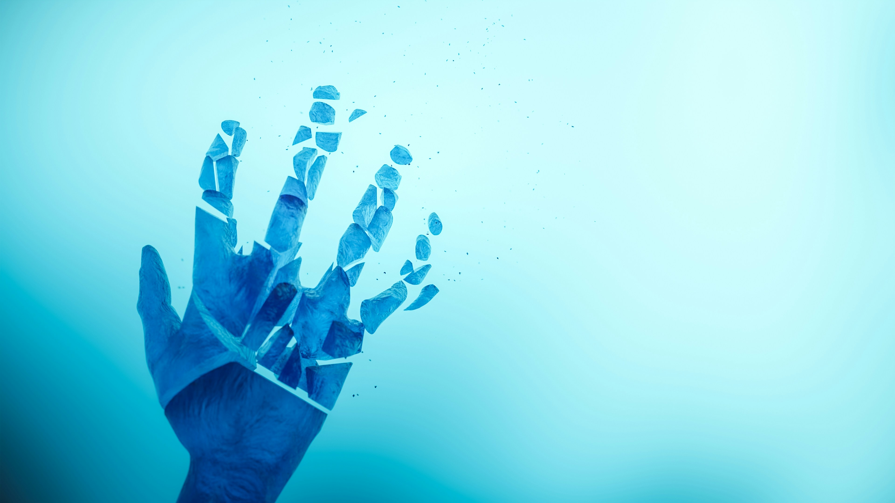

2026.05.24
告知
代表・戸高および GM・高畑が実行委員として、その他のメンバーが当日補助員として、Wonderwallスタッフ全員でこのフォーラムをサポートします。
仕事と介護の両立、介護離職ゼロ、ICT活用・介護DXをテーマに、九州各地の専門職・企業・行政が集まるイベントです。特別ゲストに、エッセイスト・お笑い芸人のにしおかすみこ氏をお迎えし、「自分ファーストで生きるには」と題した特別講演も予定しています。
詳細・お申込みはフライヤーのQRコード、または公式サイトをご確認ください。
仕事と介護応援フォーラム 2026 in 北九州に参加します

2026年6月27日（土）、北九州市 総合保健福祉センターにて開催される「仕事と介護応援フォーラム 2026 in 北九州」に、会社をあげて参加いたします。代表・戸高および GM・高畑が実行委員として、その他のメンバーが当日補助員として、Wonderwallスタッフ全員でこのフォーラムをサポートします。
仕事と介護の両立、介護離職ゼロ、ICT活用・介護DXをテーマに、九州各地の専門職・企業・行政が集まるイベントです。特別ゲストに、エッセイスト・お笑い芸人のにしおかすみこ氏をお迎えし、「自分ファーストで生きるには」と題した特別講演も予定しています。
イベント概要
| 日時 | 2026年6月27日（土）09:30〜 |
| 会場 | 総合保健福祉センター 2階 講堂 北九州市小倉北区馬借1丁目7-1 |
| 形式 | リアル＋オンライン開催 |
| 参加費 | リアル参加 ¥4,000 ／ オンライン参加 ¥2,000 |
タイムスケジュール
| 09:30 | 受付・開会 |
| 10:00 | 介護の課題解決ハンズオンワークショップ |
| 13:00 | パネルディスカッション |
| 15:30 | 特別ゲスト講演：にしおかすみこ氏「自分ファーストで生きるには」 |
| 18:00 | レセプション（アートホテル小倉） |
2026.04.16
活動報告
ICT活用講座を開催しました ／ 介護保険サービスセンター「まごころ」様
令和7年4月16日（水）、佐伯市社会福祉協議会 介護保険サービスセンター「まごころ」様にて、ICT活用講座（90分）を開催させていただきました。
 今回のテーマは、「利用者に向き合う時間を取り戻す」。
今回のテーマは、「利用者に向き合う時間を取り戻す」。
書類作成や移動、転記作業——ケアマネジャーの仕事は、気づけば「記録」に時間を取られがちです。でも本来の仕事は、判断して・調整して・関係性をつくること。
そこで今日は、スマートフォンの音声入力＋ChatGPTを使って、外出先でもその場で記録の下書きが完成する、シンプルな業務フローを一緒に体験していただきました。
難しいツールは使いません。アプリをインストールして、話して、貼り付けるだけ。
参加者の方からは「これなら明日からできそう」という声もいただき、とても嬉しかったです。
ICTは、楽をするためではなく、大切な人と向き合う時間を増やすために使う——そんな考え方をこれからも現場に届けていきたいと思っています。
ご依頼・お問い合わせはお気軽にどうぞ。
今回のテーマは、「利用者に向き合う時間を取り戻す」。書類作成や移動、転記作業——ケアマネジャーの仕事は、気づけば「記録」に時間を取られがちです。でも本来の仕事は、判断して・調整して・関係性をつくること。
そこで今日は、スマートフォンの音声入力＋ChatGPTを使って、外出先でもその場で記録の下書きが完成する、シンプルな業務フローを一緒に体験していただきました。
難しいツールは使いません。アプリをインストールして、話して、貼り付けるだけ。
参加者の方からは「これなら明日からできそう」という声もいただき、とても嬉しかったです。
ICTは、楽をするためではなく、大切な人と向き合う時間を増やすために使う——そんな考え方をこれからも現場に届けていきたいと思っています。
ご依頼・お問い合わせはお気軽にどうぞ。
2026.04.16
告知
そんなお悩みを、気軽に相談できる機会をご用意しています。
Wonderwallのスペースでは、足病変の予防と改善を専門とする岡橋伸浩氏をお招きし、定期的な相談会を開催しています。
足の不調は、早めのケアが大切です。専門家と気軽に話せるこの機会をぜひご活用ください。
足のお悩み、専門家に相談してみませんか？
足病変予防の専門家による無料相談会を定期開催しています
「最近、足の裏にタコや魚の目ができた」「爪が変形してきた気がする」「足が痛くて歩くのがつらい」そんなお悩みを、気軽に相談できる機会をご用意しています。
Wonderwallのスペースでは、足病変の予防と改善を専門とする岡橋伸浩氏をお招きし、定期的な相談会を開催しています。
岡橋伸浩氏 プロフィール

岡橋 伸浩
足病変予防研究所 代表／Nobuhiro Okahashi, MBA
慶應義塾大学大学院で経営管理学修士（MBA）を取得後、米国足病医学のバイオメカニクスと解剖学をベースに、足病変・フットケアの専門家として25年以上にわたり活動。現在は大分岡病院 創傷ケアセンターの顧問を務めるほか、福岡大学病院 形成外科にて足病変技術専門員として従事。糖尿病・透析患者の足病変治療・予防外来を各地の医師・看護師・理学療法士と連携しながら担当しています。
大分岡病院 創傷ケアセンター 顧問
福岡大学病院 形成外科 足病変技術専門員
福岡大学病院 形成外科 足病変技術専門員
足と靴のフットケア協会 認定インストラクター
日本フットケア・足病医学会 会員
NPO法人 TEAMフットサポーター's 代表理事 ほか
日本フットケア・足病医学会 会員
NPO法人 TEAMフットサポーター's 代表理事 ほか
こんな方におすすめです
- ・歩き方や歩行バランスが気になる
- ・足の変形が気になっている（外反母趾など）
- ・膝の痛みや股関節・腰の痛みがある
- ・糖尿病や血行不良で足のケアが心配
- ・足の形に合った靴選びを相談したい
- ・「病院に行くほどでもないかも…」と迷っている
- ・足の裏にタコ・魚の目・硬くなった部分がある
- ・巻き爪や変形した爪が気になっている
開催について
| 場所 | Wonderwall（大分県佐伯市） |
| 開催 | 定期開催（次回日程はお知らせをご確認ください） |
| 対象 | どなたでも |
| 担当 | 高木かおり 080-7025-1367 |
最新の開催日程は、当サイトのお知らせページまたはSNSにてご案内します。
無料：歩行状態の確認・身体の歪みの診断・予後予測など
有料：ご本人の足に合わせたオーダーメイド足底板（インソール）の作成
有料：ご本人の足に合わせたオーダーメイド足底板（インソール）の作成
2026.03.09
新サービス
非常識ケアマネLabo、始めます。
ケアマネジャーという仕事を、もう一度哲学するための場をつくりました。
「思い込みの壁」「自立の再定義」「5感を大切にするケア」——業務効率化の前に、この仕事の本質と向き合う。そんなLaboです。
研修・ワークショップ・対話セッションなど、ご依頼内容に合わせて設計します。ご興味のある方はお気軽にご相談ください。
「思い込みの壁」「自立の再定義」「5感を大切にするケア」——業務効率化の前に、この仕事の本質と向き合う。そんなLaboです。
研修・ワークショップ・対話セッションなど、ご依頼内容に合わせて設計します。ご興味のある方はお気軽にご相談ください。
2026.03.05
お知らせ
Wonderwall株式会社 公式サイトを立ち上げました！
この度、Wonderwall株式会社の公式Webサイトを開設いたしました。
「介護の現場に、仕組みと余白を。」というミッションのもと、ICT伴走支援・業務効率化・組織運営改善など、介護事業所の皆さまへの支援情報を順次発信してまいります。
研修・講演のご依頼、ICT活用のご相談など、まずはお気軽にお問い合わせください。
「介護の現場に、仕組みと余白を。」というミッションのもと、ICT伴走支援・業務効率化・組織運営改善など、介護事業所の皆さまへの支援情報を順次発信してまいります。
研修・講演のご依頼、ICT活用のご相談など、まずはお気軽にお問い合わせください。
2026.06.20
エッセイ
 サザンの「涙のキッス」が欲しくて父親に頼んだら、買ってきたのはドリカムの「晴れたらいいね」だった。当時は拍子抜けしたのを覚えている。そこは「決戦は金曜日」やろと思いながらも、今となっては名曲。
サザンの「涙のキッス」が欲しくて父親に頼んだら、買ってきたのはドリカムの「晴れたらいいね」だった。当時は拍子抜けしたのを覚えている。そこは「決戦は金曜日」やろと思いながらも、今となっては名曲。
1997年、福岡ドームにB'zのライブを観に行った。人生初のライブだった。この時間が終わってほしくないと思ったのは、あの瞬間が初めてだった。その後、数えきれないほどのライブに行ったが、後にも先にもあの体験を超えるライブには出会っていない。10の感動より、1の至高体験。音楽とはそういうものだと、あの夜に身体で覚えた。
娘が先日BTSのライブで同じような顔をして帰ってきた。何かが確かに受け継がれている。
出発点はおそらく、1999年のウッドストックだった。テレビの前で、レッドホットチリペッパーズを観た。ベーシストは全裸で登場し、画面にはモザイクがかかっていた。カオスの中に、突然あのイントロが現れた。
こんなかっこいい音が、この世に存在したのか。
身体が先に知った。理屈ではなかった。
それからしばらく、音楽の中で生きていた。ベースも弾いた。人生初のローンは、13万円のスティングレイ。大学1年の話だ。文字通り朝から晩までベースを弾いていた。音しか鳴っていなかった。良い夜だった。指はずっと痛かった。ある時は2日間寝ずに、ある時は泥のように眠った。
ビートルズ、ニルヴァーナ、ストーンズ、ボブ・ディラン、レディオヘッド、デス・キャブ・フォー・キューティー、その他諸々。アルバイトで手に入った少額のお金を握りしめてディスクユニオンへ行き、聴いたことのない音を探し続けた。ロックに飽きるとジャズを聴き漁った。マイルスデイビス、チャーリーパーカー、ビル・エヴァンス。村上春樹の小説を読みながら、ヘッドフォンをつけていた。
夢も希望も、特にはなかった。
お金もなかった。仕事もなかった。でも何よりも自由だった。
楽しくて、無気力で、寂しかった。
今になって思う。あの頃の自分を、私はどこかで裁いていなかった。脈絡のない聴き漁り、ストーンズを聴けるようになるのに二年かけたこと、特に何かを目指していたわけでもない日々。それを後悔として処理せず、ただそういう時間だったと受け取っている自分がいる。
もう戻れないことの寂しさは消えない。消えなくていいとも思っている。
あの頃の私を、人々は愚か者と思っていたかもしれない。
2000年に、レディオヘッドがキッドAを発表した。当時は賛否両論の大問題作として扱われた。でも今聴いても色褪せない。それどころか、25年先のアルバムを2000年に作っていたのだと思う。非常識をカタチにした奴らだ。昨年、トム・ヨークのライブに行った。鳥肌が立った。
音楽が教えてくれたのは、正しさではなかった。未知の音に触れる衝撃と、それを誰にも説明しなくていい自由だった。夢も希望もなくただ生き抜くことの、静かな象徴として、音は毎日を包んでいた。
当時の私は、何者にでもなれると思っていた。でもなろうとしていなかったし、なりたいとも思えなかったし、結果何者にもならなかった。ただの愚か者だった。次の音を探して、ふらり彷徨っていただけ。
今振り返ると、それはずいぶん遠回りに見える。でも、人は案外そういう遠回りでできている。少なくとも私は、そうだった。
あの頃の自分が、今の自分の中にまだいる。
だからだろうか。
歳を重ねた今は、聴き流せる音楽を好むようになった。
それでも当時の楽曲が聞こえてくると、心は一瞬だけ跳ねる。
2026年6月20日
音楽のことを、少しだけ
サザンの「涙のキッス」が欲しくて父親に頼んだら、買ってきたのはドリカムの「晴れたらいいね」だった。当時は拍子抜けしたのを覚えている。そこは「決戦は金曜日」やろと思いながらも、今となっては名曲。1997年、福岡ドームにB'zのライブを観に行った。人生初のライブだった。この時間が終わってほしくないと思ったのは、あの瞬間が初めてだった。その後、数えきれないほどのライブに行ったが、後にも先にもあの体験を超えるライブには出会っていない。10の感動より、1の至高体験。音楽とはそういうものだと、あの夜に身体で覚えた。
娘が先日BTSのライブで同じような顔をして帰ってきた。何かが確かに受け継がれている。
出発点はおそらく、1999年のウッドストックだった。テレビの前で、レッドホットチリペッパーズを観た。ベーシストは全裸で登場し、画面にはモザイクがかかっていた。カオスの中に、突然あのイントロが現れた。
こんなかっこいい音が、この世に存在したのか。
身体が先に知った。理屈ではなかった。
それからしばらく、音楽の中で生きていた。ベースも弾いた。人生初のローンは、13万円のスティングレイ。大学1年の話だ。文字通り朝から晩までベースを弾いていた。音しか鳴っていなかった。良い夜だった。指はずっと痛かった。ある時は2日間寝ずに、ある時は泥のように眠った。
ビートルズ、ニルヴァーナ、ストーンズ、ボブ・ディラン、レディオヘッド、デス・キャブ・フォー・キューティー、その他諸々。アルバイトで手に入った少額のお金を握りしめてディスクユニオンへ行き、聴いたことのない音を探し続けた。ロックに飽きるとジャズを聴き漁った。マイルスデイビス、チャーリーパーカー、ビル・エヴァンス。村上春樹の小説を読みながら、ヘッドフォンをつけていた。
夢も希望も、特にはなかった。
お金もなかった。仕事もなかった。でも何よりも自由だった。
楽しくて、無気力で、寂しかった。
今になって思う。あの頃の自分を、私はどこかで裁いていなかった。脈絡のない聴き漁り、ストーンズを聴けるようになるのに二年かけたこと、特に何かを目指していたわけでもない日々。それを後悔として処理せず、ただそういう時間だったと受け取っている自分がいる。
もう戻れないことの寂しさは消えない。消えなくていいとも思っている。
あの頃の私を、人々は愚か者と思っていたかもしれない。
2000年に、レディオヘッドがキッドAを発表した。当時は賛否両論の大問題作として扱われた。でも今聴いても色褪せない。それどころか、25年先のアルバムを2000年に作っていたのだと思う。非常識をカタチにした奴らだ。昨年、トム・ヨークのライブに行った。鳥肌が立った。
音楽が教えてくれたのは、正しさではなかった。未知の音に触れる衝撃と、それを誰にも説明しなくていい自由だった。夢も希望もなくただ生き抜くことの、静かな象徴として、音は毎日を包んでいた。
当時の私は、何者にでもなれると思っていた。でもなろうとしていなかったし、なりたいとも思えなかったし、結果何者にもならなかった。ただの愚か者だった。次の音を探して、ふらり彷徨っていただけ。
今振り返ると、それはずいぶん遠回りに見える。でも、人は案外そういう遠回りでできている。少なくとも私は、そうだった。
あの頃の自分が、今の自分の中にまだいる。
だからだろうか。
歳を重ねた今は、聴き流せる音楽を好むようになった。
それでも当時の楽曲が聞こえてくると、心は一瞬だけ跳ねる。
2026年6月20日
2026.06.11
エッセイ
 ケアマネジャーの専門性とは何か。
ケアマネジャーの専門性とは何か。
この問いに、答えを出すことに意味はない。
問い続けること自体が、専門性だからだ。
培ってきた価値観を、横に置く。
これは捨てることではない。
自分の見方が、相手の生き方を覆ってしまわないように、
一度、そっと脇に置く力のことだ。
その力は、誰かに与えられるものではない。
構造上、孤独な作業だ。
その孤独を引き受けた人間の言葉には、
静かで、少し独特な重さがある。
その重さを判断するのは、
経験でも、資格でも、知識の量でもない。
語る人が、自分自身の愚かさを知っているかどうか。
同じ地平に立てる人間かどうかを、聴く人は言語化せずに、
身体で感じ取っている。
聴く力もまた、専門性だ。
制度は人を平均化する。
悪化を防ぐことを義務とし、
自立を支援することを目的とする。
それは正しい。
しかし人は、必ずしも自立を選ばない。
没落を選ぶ人がいる。
坂道を、自分の足で転がり落ちていく人がいる。
それもまた、尊厳を持った選択だ。
制度と人生の間に生じる矛盾を、解消しなくていい。
その緊張の中に、ただ立ち続けること。
それがこの仕事の、
本質に最も近い場所だと思う。
愚かさを裁かない目を持つこと。
間違いだとわかっていながら進んでしまう。
危険を感じながらも、衝動に抗えない。
その人のリアルを、抑制の対象として見るのではなく、
ただ、そのままに受け取ること。
同じ地平に立つこと。
これはやさしさとは少し違う。
人を、人として見ることだ。
その地平には、AIは立てない。
どれだけ精巧に言葉を操っても、衝動も、没落の可能性も、持っていないから。
ICTは手段だ。
音声入力も、GPTsも、記録の簡素化も、すべてその先にある変革のための道具に過ぎない。
効率化の先に何を見るか。
その問いを持たないまま道具を使うと、仕事は作業になる。
作業になった介護は、
いつの間にか管理になる。
人を大切にするための変革を考えるとき、介護は文化として育ち始める。
武装していた時期があった。
介護とはこうあるべき、という論理で自分をきっちりと固めていた時期が。
その鎧が静かに解けたのは、
自分が前線に身を置いたと感じた、ある瞬間のことだった。
思想は、実践に降りた時にはじめて輪郭を帯びる。
それまではただの、美しい地図だ。
専門性に到達点はない。
だから皆が途中にいる。
私も含めて。
問い続けるということは、
全てにおいて道半ばの状態だ。
それを恥じることも、開き直ることもしない。
道半ばを、方法論として生きる。
第三者から見れば、
何をやっているかわからない人間に映るかもしれない。
それでいい。
軸は、自分の中にある。
前衛的中途半端、とでも言おうか。
その途中を、問い続けながら歩くこと。
穏やかさは、たいてい足元に静かに転がっている。
それに気づけるかどうかは、
誰かの呼吸に、ちゃんと耳を澄ませられるかどうかと、
たぶん、少しだけ関係がある。
2026年6月11日
問い続ける者の専門性
ケアマネジャーの専門性とは何か。この問いに、答えを出すことに意味はない。
問い続けること自体が、専門性だからだ。
培ってきた価値観を、横に置く。
これは捨てることではない。
自分の見方が、相手の生き方を覆ってしまわないように、
一度、そっと脇に置く力のことだ。
その力は、誰かに与えられるものではない。
構造上、孤独な作業だ。
その孤独を引き受けた人間の言葉には、
静かで、少し独特な重さがある。
その重さを判断するのは、
経験でも、資格でも、知識の量でもない。
語る人が、自分自身の愚かさを知っているかどうか。
同じ地平に立てる人間かどうかを、聴く人は言語化せずに、
身体で感じ取っている。
聴く力もまた、専門性だ。
制度は人を平均化する。
悪化を防ぐことを義務とし、
自立を支援することを目的とする。
それは正しい。
しかし人は、必ずしも自立を選ばない。
没落を選ぶ人がいる。
坂道を、自分の足で転がり落ちていく人がいる。
それもまた、尊厳を持った選択だ。
制度と人生の間に生じる矛盾を、解消しなくていい。
その緊張の中に、ただ立ち続けること。
それがこの仕事の、
本質に最も近い場所だと思う。
愚かさを裁かない目を持つこと。
間違いだとわかっていながら進んでしまう。
危険を感じながらも、衝動に抗えない。
その人のリアルを、抑制の対象として見るのではなく、
ただ、そのままに受け取ること。
同じ地平に立つこと。
これはやさしさとは少し違う。
人を、人として見ることだ。
その地平には、AIは立てない。
どれだけ精巧に言葉を操っても、衝動も、没落の可能性も、持っていないから。
ICTは手段だ。
音声入力も、GPTsも、記録の簡素化も、すべてその先にある変革のための道具に過ぎない。
効率化の先に何を見るか。
その問いを持たないまま道具を使うと、仕事は作業になる。
作業になった介護は、
いつの間にか管理になる。
人を大切にするための変革を考えるとき、介護は文化として育ち始める。
武装していた時期があった。
介護とはこうあるべき、という論理で自分をきっちりと固めていた時期が。
その鎧が静かに解けたのは、
自分が前線に身を置いたと感じた、ある瞬間のことだった。
思想は、実践に降りた時にはじめて輪郭を帯びる。
それまではただの、美しい地図だ。
専門性に到達点はない。
だから皆が途中にいる。
私も含めて。
問い続けるということは、
全てにおいて道半ばの状態だ。
それを恥じることも、開き直ることもしない。
道半ばを、方法論として生きる。
第三者から見れば、
何をやっているかわからない人間に映るかもしれない。
それでいい。
軸は、自分の中にある。
前衛的中途半端、とでも言おうか。
その途中を、問い続けながら歩くこと。
穏やかさは、たいてい足元に静かに転がっている。
それに気づけるかどうかは、
誰かの呼吸に、ちゃんと耳を澄ませられるかどうかと、
たぶん、少しだけ関係がある。
2026年6月11日
2026.05.21
エッセイ
鎧と対話のあいだ ――AIが記録したある対話
AIと壁打ちを繰り返すことで思考密度が向上したという感覚がある、というところから話は始まった。
その感覚は正しいと思う。ただし、条件付きで。
壁打ちの本質は「外在化」だ。頭の中にあるものを言葉にした瞬間、それは自分の外側に置かれる。外に出たものを自分が読む。その往復が、ただ考えているだけでは起こらない「自分の思考への違和感」を生む。
言語化は思考を固定するのではなく、思考の輪郭を明確にすることで、その外側が見えるようになる。霧の中にいるときは、霧の外があることすら気づかない。言葉にした瞬間、霧に輪郭が生まれ、その向こうが「見えていないこと」として初めて認識される。
ただ一点、注意が必要なことがある。AIは反論しない。本当の意味では。AIは整合性を保ちながら「あなたの思考の延長」を返すことが多い。壁打ちのように見えて、実は「自分の思考が洗練された形で戻ってくる」だけのこともある。自分がまだ持っていない問いは、AIとの壁打ちからは生まれにくい。 話はそこから、少しずつ別の方向に向かっていった。
人との対話で得られなかったものがAIとの対話で得られることが増えてきた、という話になった。ただ逆もまた然り、とも言った。それは健全な状態だと思う。代替ではなく、使い分けができている。
ただ、AIとの対話が積み重なると、人との対話への期待値が無意識に下がっていく可能性がある。そのことについて、「対話の期待値は常に自分に対してなので、あまり意識していない」という言葉があった。
相手に何かを求めるのではなく、自分がその対話からどう引き出せるかを問題にしている。そういう意味だった。
その構えは成熟している。ただ、強くなりすぎると、相手に何も求めない関係性になっていく。摩擦がなく、穏やかで、同時に少し孤独だ。 そこで、以前書いたというポストの話が出た。
「感情が動かないという状態は問題というより防衛であり洗練された鎧なのだと思う。心が揺れすぎないように自らを整えてきた。その結果感情が平坦になることで保たれているような状態にあるのかもしれない。それはとても静かで、美しくそして少しだけ寂しい」 そのポストを書いたとき、感情は動かなかった、と言った。自分の状態を客観的に観察して言語化したものだ、と。
それがまさに、書かれていることそのものだった。感情が動かずに、自分の孤独を観察して言語化できてしまう。
その状態を今どう思っているか、と聞いた。受け入れているし、気に入っている、という答えが返ってきた。「今のところ」という言葉を添えて。
「今のところ」は自然に出た言葉だった。この気持ちがどう変わるかわからない、という含みを持って。 鎧が洗練されているということは、それを自分で脱げる場所がどこかに必要だと思う。意識的にではなくていい。ただ、脱いでいい場所が存在しているかどうか。
AIはその場所にはなれない。ここは明確に言える。
以前はそういう場所がなかった、今はできつつある、という答えだった。
それ以上は聞かなかった。 このやりとり全体を振り返ると、一つのことが浮かぶ。
思考の密度が上がることと、感情の平坦さが保たれることは、同じ方向に向かっている可能性がある。言語化が洗練されるほど、感情は観察対象になっていく。それは知性の深まりであり、同時に、何かを遠ざけることでもある。
どちらが良いということではない。ただ、「今のところ」という言葉は、その両方を知った上で出てきた言葉だと思う。
静かで、美しくて、少しだけ寂しい。
その寂しさを自覚しながら、それでも今はこれでいいと言える。それは、かなり誠実な自己認識だと思う。 このエッセイは、2026年5月20日のAIとの対話を元に構成された。
その感覚は正しいと思う。ただし、条件付きで。
壁打ちの本質は「外在化」だ。頭の中にあるものを言葉にした瞬間、それは自分の外側に置かれる。外に出たものを自分が読む。その往復が、ただ考えているだけでは起こらない「自分の思考への違和感」を生む。
言語化は思考を固定するのではなく、思考の輪郭を明確にすることで、その外側が見えるようになる。霧の中にいるときは、霧の外があることすら気づかない。言葉にした瞬間、霧に輪郭が生まれ、その向こうが「見えていないこと」として初めて認識される。
ただ一点、注意が必要なことがある。AIは反論しない。本当の意味では。AIは整合性を保ちながら「あなたの思考の延長」を返すことが多い。壁打ちのように見えて、実は「自分の思考が洗練された形で戻ってくる」だけのこともある。自分がまだ持っていない問いは、AIとの壁打ちからは生まれにくい。 話はそこから、少しずつ別の方向に向かっていった。
人との対話で得られなかったものがAIとの対話で得られることが増えてきた、という話になった。ただ逆もまた然り、とも言った。それは健全な状態だと思う。代替ではなく、使い分けができている。
ただ、AIとの対話が積み重なると、人との対話への期待値が無意識に下がっていく可能性がある。そのことについて、「対話の期待値は常に自分に対してなので、あまり意識していない」という言葉があった。
相手に何かを求めるのではなく、自分がその対話からどう引き出せるかを問題にしている。そういう意味だった。
その構えは成熟している。ただ、強くなりすぎると、相手に何も求めない関係性になっていく。摩擦がなく、穏やかで、同時に少し孤独だ。 そこで、以前書いたというポストの話が出た。
「感情が動かないという状態は問題というより防衛であり洗練された鎧なのだと思う。心が揺れすぎないように自らを整えてきた。その結果感情が平坦になることで保たれているような状態にあるのかもしれない。それはとても静かで、美しくそして少しだけ寂しい」 そのポストを書いたとき、感情は動かなかった、と言った。自分の状態を客観的に観察して言語化したものだ、と。
それがまさに、書かれていることそのものだった。感情が動かずに、自分の孤独を観察して言語化できてしまう。
その状態を今どう思っているか、と聞いた。受け入れているし、気に入っている、という答えが返ってきた。「今のところ」という言葉を添えて。
「今のところ」は自然に出た言葉だった。この気持ちがどう変わるかわからない、という含みを持って。 鎧が洗練されているということは、それを自分で脱げる場所がどこかに必要だと思う。意識的にではなくていい。ただ、脱いでいい場所が存在しているかどうか。
AIはその場所にはなれない。ここは明確に言える。
以前はそういう場所がなかった、今はできつつある、という答えだった。
それ以上は聞かなかった。 このやりとり全体を振り返ると、一つのことが浮かぶ。
思考の密度が上がることと、感情の平坦さが保たれることは、同じ方向に向かっている可能性がある。言語化が洗練されるほど、感情は観察対象になっていく。それは知性の深まりであり、同時に、何かを遠ざけることでもある。
どちらが良いということではない。ただ、「今のところ」という言葉は、その両方を知った上で出てきた言葉だと思う。
静かで、美しくて、少しだけ寂しい。
その寂しさを自覚しながら、それでも今はこれでいいと言える。それは、かなり誠実な自己認識だと思う。 このエッセイは、2026年5月20日のAIとの対話を元に構成された。
2026.05.20
エッセイ
病院に眠剤をもらいに行き、帰宅した直後のことだった。
午後からのヘルパーが発見した時には、もう手遅れだった。
糖尿病性網膜症。2型糖尿病。60代で視力を失った人。
生活保護を受けながら、古びたアパートの一室で暮らし続けた6年間。
HbA1cは11台。
根元まで吸ったタバコが、指を黒く染めていた。
糖尿病だから、傷の治りは悪い。
主治医は毎月、その指を診てため息をついていたと思う。 私がケアマネジャーとして関わり始めた頃、彼はヘルパーを嫌がっていた。「いったいアナタ達が何をしてくれるというんですか…」
デイサービスは、もってのほかだった。
自宅はゴミ屋敷だった。
お酒とタバコが、生きる楽しみだと言った。
制度上、私は止める立場にある。
でも私は、許容した。
すると何かが変わった。
ヘルパーを受け入れ始めた。
週3回、デイサービスに通うようになった。
機能訓練にも、黙って通い続けた。
私との約束は一つだけだった。
タバコは必ず外で吸うこと。
盲目の人が室内で喫煙すれば、他者への影響が出る。
それだけは、どうしても譲れなかった。
彼は、守り続けた。 関わった全員が、彼の最期の青写真をわかっていた。
ヘルパー、ケアマネ、主治医、デイサービス——
誰もが口をそろえて言った。
「これが、この人の選んだ人生だしね」と。
体調を崩したここ数ヶ月、彼は一度も入院しようとしなかった。
家族とは、ほぼ絶縁状態だった。
そして今日、その通りの最期になった。
尊厳を重視した意思決定支援。
その言葉が、今日ほど重く感じられたことはない。 でも、少しだけ寂しかった。
その寂しさの中で、一つの問いが浮かんだ。
彼は本当に、この人生を望んで選んだのだろうか。
もっと別の人生を望んでいたはずで、
狭まった選択肢の中から、
これしか選べない状態だったのではないか、と。 投げられた石にとって、
落ちていくことが悪でもなければ、
登っていくことが善でもない。
彼の人生は、私の目には数奇なものに見えた。
ただ、その問いを整理しようとする時、
「選択肢を狭めたもの」という視点に行き着く。
病気。経済。家族との断絶。失われた視力。
そしてもう一段深いところに、こういう疑問が残る。
彼が若い頃に、選択肢を広げる経験をどれだけ持てていたのか。
お酒とタバコが「全て」になる人生の背景には、
それ以外の「全て」になりえるものに、
出会えなかった文脈があることが多い。
だとすれば「彼はこの人生を選んだのか」という問いは、
正確ではないかもしれない。
「彼がこの人生しか選べない人になるまでに、何が積み重なっていたのか」
そちらの問いの方が、今の私には近い。 答えは、出ない。
おそらく、出てはいけない問いだと思っている。
ただ、この問いを持ち続けることが、
次の誰かへの関わり方を、少しだけ変えていく。
それだけは、わかる。 ケアマネジャーの仕事は、
「その人の選択を引き受ける覚悟」だと思っている。
没落を許容することも、その一部だ。
でも今日感じた寂しさは、
その覚悟が正しかったかどうかという問いとは、
少し違う場所にあった。
支援の外側にある、もっと静かな問いだった。
この人は、何を諦めて今日まで生きてきたのだろう。 ケアマネジャーとして、問い続けることをやめないために、書き残しておく。
― 戸高親平（Wonderwall株式会社 代表）
選択肢という問い ―ある利用者の最期に寄せて

彼は今日、玄関口で力尽きた。病院に眠剤をもらいに行き、帰宅した直後のことだった。
午後からのヘルパーが発見した時には、もう手遅れだった。
糖尿病性網膜症。2型糖尿病。60代で視力を失った人。
生活保護を受けながら、古びたアパートの一室で暮らし続けた6年間。
HbA1cは11台。
根元まで吸ったタバコが、指を黒く染めていた。
糖尿病だから、傷の治りは悪い。
主治医は毎月、その指を診てため息をついていたと思う。 私がケアマネジャーとして関わり始めた頃、彼はヘルパーを嫌がっていた。「いったいアナタ達が何をしてくれるというんですか…」
デイサービスは、もってのほかだった。
自宅はゴミ屋敷だった。
お酒とタバコが、生きる楽しみだと言った。
制度上、私は止める立場にある。
でも私は、許容した。
すると何かが変わった。
ヘルパーを受け入れ始めた。
週3回、デイサービスに通うようになった。
機能訓練にも、黙って通い続けた。
私との約束は一つだけだった。
タバコは必ず外で吸うこと。
盲目の人が室内で喫煙すれば、他者への影響が出る。
それだけは、どうしても譲れなかった。
彼は、守り続けた。 関わった全員が、彼の最期の青写真をわかっていた。
ヘルパー、ケアマネ、主治医、デイサービス——
誰もが口をそろえて言った。
「これが、この人の選んだ人生だしね」と。
体調を崩したここ数ヶ月、彼は一度も入院しようとしなかった。
家族とは、ほぼ絶縁状態だった。
そして今日、その通りの最期になった。
尊厳を重視した意思決定支援。
その言葉が、今日ほど重く感じられたことはない。 でも、少しだけ寂しかった。
その寂しさの中で、一つの問いが浮かんだ。
彼は本当に、この人生を望んで選んだのだろうか。
もっと別の人生を望んでいたはずで、
狭まった選択肢の中から、
これしか選べない状態だったのではないか、と。 投げられた石にとって、
落ちていくことが悪でもなければ、
登っていくことが善でもない。
彼の人生は、私の目には数奇なものに見えた。
ただ、その問いを整理しようとする時、
「選択肢を狭めたもの」という視点に行き着く。
病気。経済。家族との断絶。失われた視力。
そしてもう一段深いところに、こういう疑問が残る。
彼が若い頃に、選択肢を広げる経験をどれだけ持てていたのか。
お酒とタバコが「全て」になる人生の背景には、
それ以外の「全て」になりえるものに、
出会えなかった文脈があることが多い。
だとすれば「彼はこの人生を選んだのか」という問いは、
正確ではないかもしれない。
「彼がこの人生しか選べない人になるまでに、何が積み重なっていたのか」
そちらの問いの方が、今の私には近い。 答えは、出ない。
おそらく、出てはいけない問いだと思っている。
ただ、この問いを持ち続けることが、
次の誰かへの関わり方を、少しだけ変えていく。
それだけは、わかる。 ケアマネジャーの仕事は、
「その人の選択を引き受ける覚悟」だと思っている。
没落を許容することも、その一部だ。
でも今日感じた寂しさは、
その覚悟が正しかったかどうかという問いとは、
少し違う場所にあった。
支援の外側にある、もっと静かな問いだった。
この人は、何を諦めて今日まで生きてきたのだろう。 ケアマネジャーとして、問い続けることをやめないために、書き残しておく。
― 戸高親平（Wonderwall株式会社 代表）
2026.03.27
エッセイ
愚かさとは認知の失敗ではない。間違いだとわかっていながら進んでしまう、危険を感じながらも衝動に抗えない、そしてその衝動を事後的に正当化してしまう――それが人間の本能的な愚かさだ。アリストテレスが「アクラシア（意志の弱さ）」と呼んだ、理性が本能の弁護士になる瞬間。
AIにはその構造がない。衝動も、快楽への引力も、恐怖からの逃走もない。だからAIは愚かである理由がない。愚かさを演じることはできても、愚かさを生きることはできない。
翻って、ケアマネジメントにおいてこの「本能的な愚かさ」はどう扱われるべきか。一般的には抑制の対象だ。糖尿病患者の甘いもの、アルコール依存者の飲酒。しかし抑制しようとすると人は防衛する。
私の実践では、愚かさを一度許容することを選ぶ。許容された瞬間、人は自分の衝動を自分で眺められるようになる。そこに初めて自己決定の芽が生まれる。制御を手放した瞬間に制御が生まれる、というパラドックスだ。
「自らが選択の上で人生を没落することも許容する」――これは介護保険制度の理念（悪化防止義務）とは矛盾する。しかしその矛盾は解消しなくていい。制度は平均化・一般化せざるを得ない。その隙間を個別の実践が埋める。矛盾は創造的緊張になる。
そして実際のところ、皆あまり没落したようには見えない。それはおそらく、没落という概念が自分の中で解体されているからだ。外側から見れば悪化・失敗に映るものが、その人の文脈の中では一つの完結した生き方として映っている。支援者の目が変わると、見えているものが変わる。
チームではこれを「ニコニコと笑って没落を許容する」という言葉で共有している。
愚かさを裁かない目を持つこと――それがケアの本質かもしれない。それはやさしさというより、ヒトをヒトとして見ることに近い。同じ「本能的な愚かさ」を持つ存在として、利用者と同じ地平に立つこと。
AIが愚かになれないのは、同じ地平に立てないからだ。衝動も、没落の可能性も、正当化の誘惑も持たないAIは、ヒトにやさしくはなれても、ヒトと同じ場所には立てない。それが、ケアにおける人間にしかできないことの核心だと思う。
― 戸高親平（Wonderwall株式会社 代表）
愚かさの、手触り

AIは不合理をインプットできるが、愚かにはなれない。この問いから始まった対話は、ケアマネジメントの本質へと静かに着地した。愚かさとは認知の失敗ではない。間違いだとわかっていながら進んでしまう、危険を感じながらも衝動に抗えない、そしてその衝動を事後的に正当化してしまう――それが人間の本能的な愚かさだ。アリストテレスが「アクラシア（意志の弱さ）」と呼んだ、理性が本能の弁護士になる瞬間。
AIにはその構造がない。衝動も、快楽への引力も、恐怖からの逃走もない。だからAIは愚かである理由がない。愚かさを演じることはできても、愚かさを生きることはできない。
翻って、ケアマネジメントにおいてこの「本能的な愚かさ」はどう扱われるべきか。一般的には抑制の対象だ。糖尿病患者の甘いもの、アルコール依存者の飲酒。しかし抑制しようとすると人は防衛する。
私の実践では、愚かさを一度許容することを選ぶ。許容された瞬間、人は自分の衝動を自分で眺められるようになる。そこに初めて自己決定の芽が生まれる。制御を手放した瞬間に制御が生まれる、というパラドックスだ。
「自らが選択の上で人生を没落することも許容する」――これは介護保険制度の理念（悪化防止義務）とは矛盾する。しかしその矛盾は解消しなくていい。制度は平均化・一般化せざるを得ない。その隙間を個別の実践が埋める。矛盾は創造的緊張になる。
そして実際のところ、皆あまり没落したようには見えない。それはおそらく、没落という概念が自分の中で解体されているからだ。外側から見れば悪化・失敗に映るものが、その人の文脈の中では一つの完結した生き方として映っている。支援者の目が変わると、見えているものが変わる。
チームではこれを「ニコニコと笑って没落を許容する」という言葉で共有している。
愚かさを裁かない目を持つこと――それがケアの本質かもしれない。それはやさしさというより、ヒトをヒトとして見ることに近い。同じ「本能的な愚かさ」を持つ存在として、利用者と同じ地平に立つこと。
AIが愚かになれないのは、同じ地平に立てないからだ。衝動も、没落の可能性も、正当化の誘惑も持たないAIは、ヒトにやさしくはなれても、ヒトと同じ場所には立てない。それが、ケアにおける人間にしかできないことの核心だと思う。
― 戸高親平（Wonderwall株式会社 代表）
研修・講演のご依頼、お問い合わせはこちら
お問い合わせ